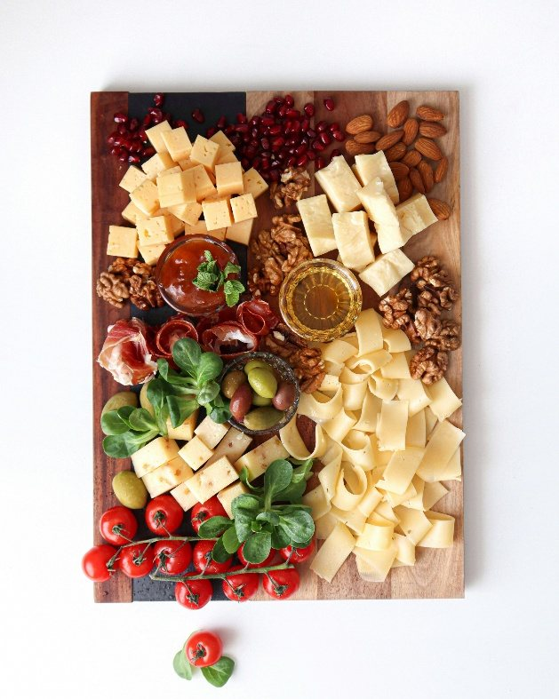
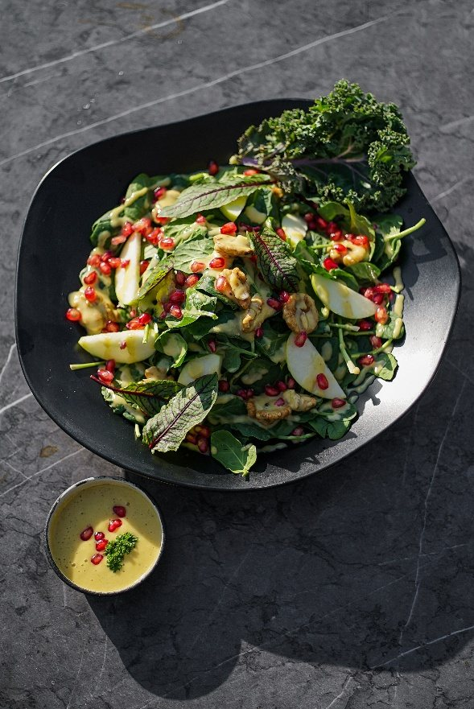

Business plans — Étude 02
L'Appartement — café-restaurant multi-moments
Exercice d'analyse et de rédaction : établir le business plan d'un café-restaurant pensé pour plusieurs moments de la journée. L'Appartement est un nom de marque inventé.
Contexte
L'exercice consistait à évaluer un concept de brasserie de proximité couvrant quatre moments — coffee shop le matin, restauration gourmande, rapide et saisonnière le midi, soirée conviviale et raffinée, offre d'heures creuses — dans une commune en redynamisation économique.
Le local retenu se situe en centre-ville d'Épinay-sur-Orge, sur l'axe principal reliant la gare aux zones de bureaux et à proximité des arrêts de bus. Le travail devait s'appuyer sur des données réelles : besoins des habitants, zone de chalandise et densité concurrentielle.
Méthode
L'étude a été construite en trois volets :
- enquête de besoins — exploitation d'une enquête menée en 2023 auprès de 1 000 habitants sur la fréquentation du centre-ville et les attentes vis-à-vis des commerces ;
- analyse de la zone de chalandise — délimitation de deux périmètres (5 minutes à pied et 5 minutes à vélo) et relevé des indicateurs démographiques, de revenus et de concurrence ;
- segmentation horaire du concept — définition d'une offre par moment de la journée (matin, midi, soir, heures creuses) et d'un objectif de rentabilité par créneau.
Résultat
Les tableaux ci-dessous reprennent les données d'enquête et de zone de chalandise retenues dans l'étude. Les valeurs proviennent du document source.
| Indicateur | Valeur |
|---|---|
| Habitants fréquentant régulièrement le centre-ville | 82 % |
| Habitants déclarant ne pas s'y rendre | 18 % |
| Part souhaitant un lieu de restauration (dont un bar avec terrasse) | plus de 70 % |
| Attentes complémentaires citées : épicerie de qualité, fromagerie | mentionnées |
| Critère | Zone à 5 min à pied | Zone à 5 min à vélo |
|---|---|---|
| Nombre d'habitants | 2 877 | 33 062 |
| Nombre de ménages | 1 207 | 13 380 |
| Revenu médian | 29 000 € | 27 000 € |
| Part de revenus élevés (CSP+) | 42 % | 35 % |
| Nombre de concurrents directs | 0 | 8 |


La structuration du plan d'investissement, du plan de financement et du besoin en fonds de roulement de ce concept fait l'objet d'un modèle d'exploitation distinct, présenté dans la section Excel du portfolio (L'Appartement — investissement, financement et BFR).
Ce que cela démontre
Exploitation d'une enquête de terrain pour dimensionner une offre et prioriser les segments de clientèle. Lecture d'une zone de chalandise (démographie, revenus, densité concurrentielle) pour évaluer un potentiel commercial et argumenter un positionnement multi-moments.